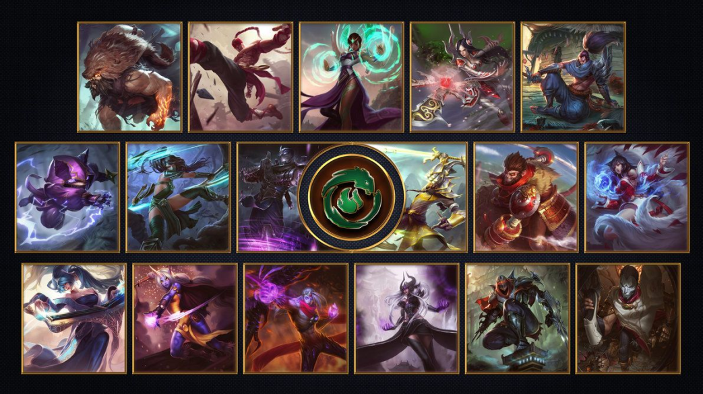

Rodeada por águas traiçoeiras, Ionia é composta por várias províncias aliadas dispersas ao longo do arquipélago gigantesco conhecido por muitos como as Primeiras Terras. Como a cultura ioniana vem sendo moldada há muito tempo com base na busca pelo equilíbrio em todas as coisas, a fronteira entre os reinos material e espiritual tende a ser mais flexível por aqui, principalmente nas florestas e montanhas selvagens.
Embora os encantamentos deste lugar sejam instáveis e suas criaturas sejam mágicas e perigosas, a maioria dos ionianos conseguiu levar uma vida próspera aqui durante séculos. Os monastérios cheios de guerreiros, as milícias provinciais e até mesmo o próprio continente foram o suficiente para mantê-los protegidos. Mas essa calmaria terminou há doze anos, quando Noxus atacou as Primeiras Terras.
As tropas do império, as quais pareciam não ter fim, invadiram Ionia e só foram derrotadas muitos anos depois, e com grandes custos. Agora, uma paz frágil paira sobre Ionia. Reações distintas à guerra acabaram dividindo a região – alguns grupos, como os monges Shojin e os Kinkou, procuram retornar ao isolamento pacífico e às tradições antigas. Já outras facções mais radicais, como a Irmandade Navori e a Ordem das Sombras, exigem a militarização da magia destas terras, a fim de criar uma nação unificada capaz de se vingar de Noxus.
O destino de Ionia se sustenta sobre um equilíbrio delicado que alguns estão dispostos a desfazer, mas todos, sem exceção, estão irrequietos, sentindo a energia da mudança sob seus pés.
Campeões
Abaixo, podemos ver alguns campeões que nasceram em Ionia.

Flesrecer espiritual
Nascido da tradição e do poder místico de Ionia, o Festival do Florescer Espiritual presta homenagens aos que já se foram.